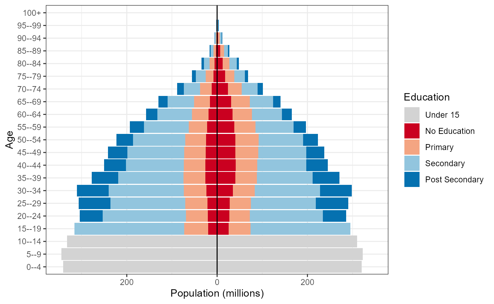
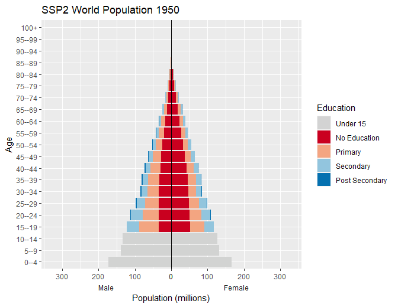

Overview of the wcde package
Guy J. Abel, Samir K.C., Michaela Potancokova, Claudia Reiter, Andrea Tamburini and Dilek Yildiz
Source:vignettes/wcde.Rmd
wcde.RmdThe wcde package allows for R users to easily download data from the Wittgenstein Centre Human Capital Data Explorer as well as containing a number of helpful functions for working with education specific demographic data.
Installation
You can install the released version of wcde from CRAN with:
install.packages("wcde")Install the developmental version with:
library(devtools)
install_github("guyabel/wcde", ref = "main")Getting data into R
The get_wcde() function can be used to download data from the Wittgenstein Centre Human Capital Data Explorer. It requires three user inputs
-
indicator: a short code for the indicator of interest -
scenario: a number referring to a SSP narrative, by default 2 is used (for SSP2) -
country_code(orcountry_name): corresponding to the country of interest
library(wcde)
# download education specific tfr data
get_wcde(indicator = "etfr",
country_name = c("Brazil", "Albania"))
#> # A tibble: 204 x 6
#> scenario name country_code education period etfr
#> <dbl> <chr> <dbl> <chr> <chr> <dbl>
#> 1 2 Brazil 76 No Education 2015-2020 2.47
#> 2 2 Albania 8 No Education 2015-2020 1.88
#> 3 2 Brazil 76 Incomplete Primary 2015-2020 2.47
#> 4 2 Albania 8 Incomplete Primary 2015-2020 1.88
#> 5 2 Brazil 76 Primary 2015-2020 2.47
#> 6 2 Albania 8 Primary 2015-2020 1.88
#> 7 2 Brazil 76 Lower Secondary 2015-2020 1.89
#> 8 2 Albania 8 Lower Secondary 2015-2020 1.9
#> 9 2 Brazil 76 Upper Secondary 2015-2020 1.37
#> 10 2 Albania 8 Upper Secondary 2015-2020 1.57
#> # ... with 194 more rows
# download education specific survivorship rates
get_wcde(indicator = "eassr",
country_name = c("Niger", "Korea"))
#> # A tibble: 8,976 x 8
#> scenario name country_code age sex education period eassr
#> <dbl> <chr> <dbl> <chr> <chr> <chr> <chr> <dbl>
#> 1 2 Niger 562 Newborn Male No Educat~ 2015-~ 91.6
#> 2 2 Republic of Korea 410 Newborn Male No Educat~ 2015-~ 99.4
#> 3 2 Niger 562 Newborn Male Incomplet~ 2015-~ 92
#> 4 2 Republic of Korea 410 Newborn Male Incomplet~ 2015-~ 99.5
#> 5 2 Niger 562 Newborn Male Primary 2015-~ 92.5
#> 6 2 Republic of Korea 410 Newborn Male Primary 2015-~ 99.5
#> 7 2 Niger 562 Newborn Male Lower Sec~ 2015-~ 93.4
#> 8 2 Republic of Korea 410 Newborn Male Lower Sec~ 2015-~ 99.6
#> 9 2 Niger 562 Newborn Male Upper Sec~ 2015-~ 95.2
#> 10 2 Republic of Korea 410 Newborn Male Upper Sec~ 2015-~ 99.7
#> # ... with 8,966 more rowsIndicator codes
The indicator input must match the short code from the indicator table. The find_indicator() function can be used to look up short codes (given in the first column) from the wic_indicators data frame:
find_indicator(x = "tfr")
#> # A tibble: 2 x 3
#> indicator description definition
#> <chr> <chr> <chr>
#> 1 tfr Total Fertility Rate "The average number of children b~
#> 2 etfr Total Fertility Rate by Education "The average number of children b~Temporal coverage
By default, get_wdce() returns data for all years or available periods or years. The filter() function in dplyr can be used to filter data for specific years or periods, for example:
library(tidyverse)
get_wcde(indicator = "e0",
country_name = c("Japan", "Australia")) %>%
filter(period == "2015-2020")
#> # A tibble: 4 x 6
#> scenario name country_code sex period e0
#> <dbl> <chr> <dbl> <chr> <chr> <dbl>
#> 1 2 Japan 392 Male 2015-2020 80.7
#> 2 2 Australia 36 Male 2015-2020 81.3
#> 3 2 Japan 392 Female 2015-2020 87.2
#> 4 2 Australia 36 Female 2015-2020 85
get_wcde(indicator = "sexratio",
country_name = c("China", "South Korea")) %>%
filter(year == 2020)
#> # A tibble: 44 x 6
#> scenario name country_code age year sexratio
#> <dbl> <chr> <dbl> <chr> <dbl> <dbl>
#> 1 2 China 156 All 2020 1.06
#> 2 2 Republic of Korea 410 All 2020 1
#> 3 2 China 156 0--4 2020 1.15
#> 4 2 Republic of Korea 410 0--4 2020 1.07
#> 5 2 China 156 5--9 2020 1.16
#> 6 2 Republic of Korea 410 5--9 2020 1.07
#> 7 2 China 156 10--14 2020 1.17
#> 8 2 Republic of Korea 410 10--14 2020 1.07
#> 9 2 China 156 15--19 2020 1.16
#> 10 2 Republic of Korea 410 15--19 2020 1.1
#> # ... with 34 more rowsPast data is only available for selected indicators. These can be viewed using the past indicator column:
wic_indicators %>%
filter(past) %>%
select(1:2)
#> # A tibble: 28 x 2
#> indicator description
#> <chr> <chr>
#> 1 pop Population Size (000's)
#> 2 bpop Population Size by Broad Age (000's)
#> 3 epop Population Size by Education (000's)
#> 4 prop Educational Attainment Distribution
#> 5 bprop Educational Attainment Distribution by Broad Age
#> 6 growth Average Annual Growth Rate
#> 7 nirate Average Annual Rate of Natural Increase
#> 8 sexratio Sex Ratio
#> 9 mage Population Median Age
#> 10 tdr Total Dependency Ratio
#> # ... with 18 more rowsThe filter() function can also be used to filter specific indicators to specific age, sex or education groups
Country names and codes
Country names are guessed using the countrycode package.
The get_wcde() accepts ISO alpha_numeric codes for countries:
get_wcde(indicator = "tfr",
country_name = c("U.A.E", "Espania", "Österreich"))
#> # A tibble: 90 x 5
#> scenario name country_code period tfr
#> <dbl> <chr> <dbl> <chr> <dbl>
#> 1 2 United Arab Emirates 784 1950-1955 6.97
#> 2 2 Spain 724 1950-1955 2.53
#> 3 2 Austria 40 1950-1955 2.1
#> 4 2 United Arab Emirates 784 1955-1960 6.97
#> 5 2 Spain 724 1955-1960 2.7
#> 6 2 Austria 40 1955-1960 2.57
#> 7 2 United Arab Emirates 784 1960-1965 6.87
#> 8 2 Spain 724 1960-1965 2.81
#> 9 2 Austria 40 1960-1965 2.78
#> 10 2 United Arab Emirates 784 1965-1970 6.77
#> # ... with 80 more rows
get_wcde(indicator = "etfr", country_code = c(44, 100))
#> # A tibble: 204 x 6
#> scenario name country_code education period etfr
#> <dbl> <chr> <dbl> <chr> <chr> <dbl>
#> 1 2 Bahamas 44 No Education 2015-2020 2.71
#> 2 2 Bulgaria 100 No Education 2015-2020 1.72
#> 3 2 Bahamas 44 Incomplete Primary 2015-2020 2.71
#> 4 2 Bulgaria 100 Incomplete Primary 2015-2020 1.72
#> 5 2 Bahamas 44 Primary 2015-2020 2.71
#> 6 2 Bulgaria 100 Primary 2015-2020 1.72
#> 7 2 Bahamas 44 Lower Secondary 2015-2020 2.09
#> 8 2 Bulgaria 100 Lower Secondary 2015-2020 1.73
#> 9 2 Bahamas 44 Upper Secondary 2015-2020 1.76
#> 10 2 Bulgaria 100 Upper Secondary 2015-2020 1.44
#> # ... with 194 more rowsA full list of available countries and region aggregates can be found in the wic_locations data frame.
wic_locations
#> # A tibble: 230 x 5
#> name isono continent region dim
#> <chr> <dbl> <chr> <chr> <chr>
#> 1 World 900 <NA> <NA> area
#> 2 Africa 903 <NA> <NA> area
#> 3 Asia 935 <NA> <NA> area
#> 4 Europe 908 <NA> <NA> area
#> 5 Latin America and the Caribbean 904 <NA> <NA> area
#> 6 Northern America 905 <NA> <NA> area
#> 7 Oceania 909 <NA> <NA> area
#> 8 Afghanistan 4 Asia South-Central Asia country
#> 9 Albania 8 Europe Southern Europe country
#> 10 Algeria 12 Africa Northern Africa country
#> # ... with 220 more rowsScenarios
By default get_wcde() returns data for Medium (SSP2) scenario. Results for different SSP scenarios can be returned by passing a different (or multiple) scenario values to the scenario argument in get_data().
get_wcde(indicator = "growth",
country_name = c("India", "China"),
scenario = c(1:3, 21, 22)) %>%
filter(period == "2095-2100")
#> # A tibble: 10 x 5
#> scenario name country_code period growth
#> <dbl> <chr> <dbl> <chr> <dbl>
#> 1 1 India 356 2095-2100 -0.7
#> 2 1 China 156 2095-2100 -1.1
#> 3 2 India 356 2095-2100 -0.5
#> 4 2 China 156 2095-2100 -1
#> 5 3 India 356 2095-2100 0.2
#> 6 3 China 156 2095-2100 -0.2
#> 7 21 India 356 2095-2100 -0.5
#> 8 21 China 156 2095-2100 -0.9
#> 9 22 India 356 2095-2100 -0.5
#> 10 22 China 156 2095-2100 -1Set include_scenario_names = TRUE to include a columns with the full names of the scenarios
get_wcde(indicator = "tfr",
country_name = c("Kenya", "Nigeria", "Algeria"),
scenario = 1:3,
include_scenario_names = TRUE) %>%
filter(period == "2045-2050")
#> # A tibble: 9 x 7
#> scenario scenario_name scenario_abb name country_code period tfr
#> <dbl> <chr> <chr> <chr> <dbl> <chr> <dbl>
#> 1 1 Rapid Development (S~ SSP1 Kenya 404 2045-2~ 1.62
#> 2 1 Rapid Development (S~ SSP1 Nigeria 566 2045-2~ 2.29
#> 3 1 Rapid Development (S~ SSP1 Algeria 12 2045-2~ 1.53
#> 4 2 Medium (SSP2) SSP2 Kenya 404 2045-2~ 2.36
#> 5 2 Medium (SSP2) SSP2 Nigeria 566 2045-2~ 3.37
#> 6 2 Medium (SSP2) SSP2 Algeria 12 2045-2~ 1.77
#> 7 3 Stalled Development ~ SSP3 Kenya 404 2045-2~ 3.33
#> 8 3 Stalled Development ~ SSP3 Nigeria 566 2045-2~ 4.65
#> 9 3 Stalled Development ~ SSP3 Algeria 12 2045-2~ 2.41Additional details of the pathways for each scenario numeric code can be found in the wic_scenarios object. Further background and links to the corresponding literature are provided in the Data Explorer
wic_scenarios
#> # A tibble: 5 x 3
#> scenario_name scenario scenario_abb
#> <chr> <dbl> <chr>
#> 1 Rapid Development (SSP1) 1 SSP1
#> 2 Medium (SSP2) 2 SSP2
#> 3 Stalled Development (SSP3) 3 SSP3
#> 4 Medium - Zero Migration (SSP2 - ZM) 21 SSP2ZM
#> 5 Medium - Double Migration (SSP2 - DM) 22 SSP2DMAll countries data
Data for all countries can be obtained by not setting country_name or country_code
get_wcde(indicator = "mage")
#> # A tibble: 7,099 x 5
#> scenario name country_code year mage
#> <dbl> <chr> <dbl> <dbl> <dbl>
#> 1 2 Bulgaria 100 1950 27.3
#> 2 2 Myanmar 104 1950 22.8
#> 3 2 Burundi 108 1950 19.5
#> 4 2 Belarus 112 1950 27.2
#> 5 2 Cambodia 116 1950 18.7
#> 6 2 Algeria 12 1950 19.4
#> 7 2 Cameroon 120 1950 20.8
#> 8 2 Canada 124 1950 27.7
#> 9 2 Cape Verde 132 1950 23
#> 10 2 Central African Republic 140 1950 22.5
#> # ... with 7,089 more rowsMultiple indicators
The get_wdce() function needs to be called multiple times to download multiple indicators. This can be done using the map() function in purrr
mi <- tibble(ind = c("odr", "nirate", "ggapedu25")) %>%
mutate(d = map(.x = ind, .f = ~get_wcde(indicator = .x)))
mi
#> # A tibble: 3 x 2
#> ind d
#> <chr> <list>
#> 1 odr <tibble [7,099 x 5]>
#> 2 nirate <tibble [6,870 x 5]>
#> 3 ggapedu25 <tibble [41,346 x 6]>
mi %>%
filter(ind == "odr") %>%
select(-ind) %>%
unnest(cols = d)
#> # A tibble: 7,099 x 5
#> scenario name country_code year odr
#> <dbl> <chr> <dbl> <dbl> <dbl>
#> 1 2 Bulgaria 100 1950 0.1
#> 2 2 Myanmar 104 1950 0.05
#> 3 2 Burundi 108 1950 0.06
#> 4 2 Belarus 112 1950 0.13
#> 5 2 Cambodia 116 1950 0.05
#> 6 2 Algeria 12 1950 0.06
#> 7 2 Cameroon 120 1950 0.06
#> 8 2 Canada 124 1950 0.12
#> 9 2 Cape Verde 132 1950 0.13
#> 10 2 Central African Republic 140 1950 0.09
#> # ... with 7,089 more rows
mi %>%
filter(ind == "nirate") %>%
select(-ind) %>%
unnest(cols = d)
#> # A tibble: 6,870 x 5
#> scenario name country_code period nirate
#> <dbl> <chr> <dbl> <chr> <dbl>
#> 1 2 Bulgaria 100 1950-1955 11.1
#> 2 2 Myanmar 104 1950-1955 19.1
#> 3 2 Burundi 108 1950-1955 24.1
#> 4 2 Belarus 112 1950-1955 10.1
#> 5 2 Cambodia 116 1950-1955 25.9
#> 6 2 Algeria 12 1950-1955 27.1
#> 7 2 Cameroon 120 1950-1955 17.6
#> 8 2 Canada 124 1950-1955 18.9
#> 9 2 Cape Verde 132 1950-1955 26.9
#> 10 2 Central African Republic 140 1950-1955 10.7
#> # ... with 6,860 more rows
mi %>%
filter(ind == "ggapedu25") %>%
select(-ind) %>%
unnest(cols = d)
#> # A tibble: 41,346 x 6
#> scenario name country_code year education ggapedu25
#> <dbl> <chr> <dbl> <dbl> <chr> <dbl>
#> 1 2 Bulgaria 100 1950 No Education -20
#> 2 2 Myanmar 104 1950 No Education -13
#> 3 2 Burundi 108 1950 No Education -6
#> 4 2 Belarus 112 1950 No Education -10
#> 5 2 Cambodia 116 1950 No Education -21
#> 6 2 Algeria 12 1950 No Education -2
#> 7 2 Cameroon 120 1950 No Education -13
#> 8 2 Canada 124 1950 No Education -2
#> 9 2 Cape Verde 132 1950 No Education -9
#> 10 2 Central African Republic 140 1950 No Education -1
#> # ... with 41,336 more rowsWorking with population data
The education population data in the data explorer, obtained by setting indicator = "epop" in get_wcde(), provide results by up to three different education categorizations (4, 6 and 8 education groups).
d <- get_wcde(indicator = "epop", country_code = 900)
d
#> # A tibble: 16,368 x 8
#> scenario name country_code age sex education year epop
#> <dbl> <chr> <dbl> <chr> <chr> <chr> <dbl> <dbl>
#> 1 2 World 900 All Both Total 1950 2541292.
#> 2 2 World 900 All Both Under 15 1950 868844.
#> 3 2 World 900 All Both No Education 1950 763612.
#> 4 2 World 900 All Both Incomplete Primary 1950 197922.
#> 5 2 World 900 All Both Primary 1950 351588.
#> 6 2 World 900 All Both Lower Secondary 1950 209181.
#> 7 2 World 900 All Both Upper Secondary 1950 120001.
#> 8 2 World 900 All Both Post Secondary 1950 30143.
#> 9 2 World 900 0--4 Both Total 1950 338387.
#> 10 2 World 900 0--4 Both Under 15 1950 338387.
#> # ... with 16,358 more rowsAs the data frame contains multiple groupings, the edu_group_sum() function can be used to provide education specific population data. Users can specify the education groupings by setting the n argument to 4, 6 or 8.
d %>%
edu_group_sum(n = 4) %>%
filter(year == 2020)
#> # A tibble: 210 x 8
#> scenario name country_code year age sex education epop
#> <dbl> <fct> <dbl> <dbl> <fct> <fct> <fct> <dbl>
#> 1 2 World 900 2020 0--4 Male Under 15 340742.
#> 2 2 World 900 2020 0--4 Male No Education 0
#> 3 2 World 900 2020 0--4 Male Primary 0
#> 4 2 World 900 2020 0--4 Male Secondary 0
#> 5 2 World 900 2020 0--4 Male Post Secondary 0
#> 6 2 World 900 2020 0--4 Female Under 15 319616.
#> 7 2 World 900 2020 0--4 Female No Education 0
#> 8 2 World 900 2020 0--4 Female Primary 0
#> 9 2 World 900 2020 0--4 Female Secondary 0
#> 10 2 World 900 2020 0--4 Female Post Secondary 0
#> # ... with 200 more rows
d %>%
edu_group_sum(n = 6) %>%
filter(year == 2020,
age == "30--34")
#> # A tibble: 14 x 8
#> scenario name country_code year age sex education epop
#> <dbl> <fct> <dbl> <dbl> <fct> <fct> <fct> <dbl>
#> 1 2 World 900 2020 30--34 Male Under 15 0
#> 2 2 World 900 2020 30--34 Male No Education 23820.
#> 3 2 World 900 2020 30--34 Male Incomplete Primary 14488.
#> 4 2 World 900 2020 30--34 Male Primary 35713.
#> 5 2 World 900 2020 30--34 Male Lower Secondary 69758.
#> 6 2 World 900 2020 30--34 Male Upper Secondary 96988.
#> 7 2 World 900 2020 30--34 Male Post Secondary 68842.
#> 8 2 World 900 2020 30--34 Female Under 15 0
#> 9 2 World 900 2020 30--34 Female No Education 35410.
#> 10 2 World 900 2020 30--34 Female Incomplete Primary 14645.
#> 11 2 World 900 2020 30--34 Female Primary 33563.
#> 12 2 World 900 2020 30--34 Female Lower Secondary 60923.
#> 13 2 World 900 2020 30--34 Female Upper Secondary 83646.
#> 14 2 World 900 2020 30--34 Female Post Secondary 69475.Population pyramids
Create population pyramids by setting male population values to negative equivalent to allow for divergent columns from the y axis.
w <- d %>%
edu_group_sum(n = 4) %>%
mutate(pop = ifelse(test = sex == "Male", yes = -epop, no = epop),
pop = pop/1e3)
w
#> # A tibble: 6,510 x 9
#> scenario name country_code year age sex education epop pop
#> <dbl> <fct> <dbl> <dbl> <fct> <fct> <fct> <dbl> <dbl>
#> 1 2 World 900 1950 0--4 Male Under 15 172362. -172.
#> 2 2 World 900 1950 0--4 Male No Education 0 0
#> 3 2 World 900 1950 0--4 Male Primary 0 0
#> 4 2 World 900 1950 0--4 Male Secondary 0 0
#> 5 2 World 900 1950 0--4 Male Post Secondary 0 0
#> 6 2 World 900 1950 0--4 Female Under 15 166026. 166.
#> 7 2 World 900 1950 0--4 Female No Education 0 0
#> 8 2 World 900 1950 0--4 Female Primary 0 0
#> 9 2 World 900 1950 0--4 Female Secondary 0 0
#> 10 2 World 900 1950 0--4 Female Post Secondary 0 0
#> # ... with 6,500 more rowsStandard plot
Use standard ggplot code to create population pyramid with
-
scale_x_symmetric()from thelemonpackage to allow for equal male and female x-axis - fill colours set to the
wic_col4object in the wcde package which contains the names of the colours used in the Wittgenstein Centre Human Capital Data Explorer Data Explorer.
Note wic_col6 and wic_col8 objects also exist for equivalent plots of population data objects with corresponding numbers of categories of education.
library(lemon)
w %>%
filter(year == 2020) %>%
ggplot(mapping = aes(x = pop, y = age, fill = fct_rev(education))) +
geom_col() +
geom_vline(xintercept = 0, colour = "black") +
scale_x_symmetric(labels = abs) +
scale_fill_manual(values = wic_col4, name = "Education") +
labs(x = "Population (millions)", y = "Age") +
theme_bw() 
Sex label position
Add male and female labels on the x-axis by
- Creating a facet plot with the strips on the bottom with transparent backgrounds and no space between.
- Set the x axis to have zero expansion beyond the values in the data allowing the two sides of the pyramids to meet.
- Add a
geom_blank()to allow for equal x-axis and additional space at the end of largest columns.
w <- w %>%
mutate(pop_max = ifelse(sex == "Male", -max(pop), max(pop)))
w %>%
filter(year == 2020) %>%
ggplot(mapping = aes(x = pop, y = age, fill = fct_rev(education))) +
geom_col() +
geom_vline(xintercept = 0, colour = "black") +
scale_x_continuous(labels = abs, expand = c(0, 0)) +
scale_fill_manual(values = wic_col4, name = "Education") +
labs(x = "Population (millions)", y = "Age") +
facet_wrap(facets = "sex", scales = "free_x", strip.position = "bottom") +
geom_blank(mapping = aes(x = pop_max * 1.1)) +
theme(panel.spacing.x = unit(0, "pt"),
strip.placement = "outside",
strip.background = element_rect(fill = "transparent"),
strip.text.x = element_text(margin = margin( b = 0, t = 0)))
Animate
Animate the pyramid through the past data and projection periods using the transition_time() function in the gganimate package
library(gganimate)
ggplot(data = w,
mapping = aes(x = pop, y = age, fill = fct_rev(education))) +
geom_col() +
geom_vline(xintercept = 0, colour = "black") +
scale_x_continuous(labels = abs, expand = c(0, 0)) +
scale_fill_manual(values = wic_col4, name = "Education") +
facet_wrap(facets = "sex", scales = "free_x", strip.position = "bottom") +
geom_blank(mapping = aes(x = pop_max * 1.1)) +
theme(panel.spacing.x = unit(0, "pt"),
strip.placement = "outside",
strip.background = element_rect(fill = "transparent"),
strip.text.x = element_text(margin = margin(b = 0, t = 0))) +
transition_time(time = year) +
labs(x = "Population (millions)", y = "Age",
title = 'SSP2 World Population {round(frame_time)}')